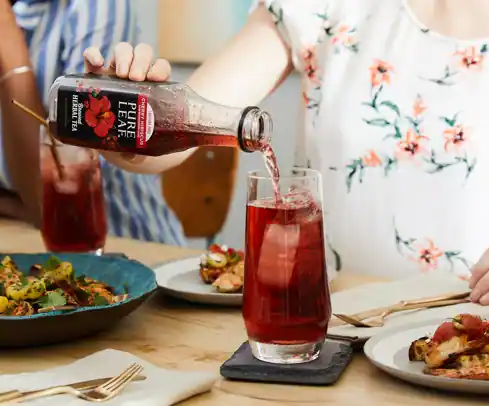

| What is Herbal tea? |
From elegant and soothing to crisp and refreshing, herbal teas are versatile in taste and in experience. The process of making herbal tea begins with a delicate infusion of flowers, fruits, bark, leaves, seeds, or roots in hot water. Herbal teas are often called tisanes, herbals, or infusions, and are known for their delicious and naturally caffeine-free flavors. If you read our Matcha 101 series, you’ll remember that green, black, oolong, and delicious white teas, all of which are caffeinated, are made from the tea plant known as Camellia sinensis. Herbal teas, however, can come from hundreds of plants worldwide, but they do not come from the tea plant. |
 |
| Herbal Tea Uses |
Since the time of ancient China and Egypt, herbal teas have been enjoyed not only for their taste – but for their healing properties as well. They were also considered helpful in spiritual and intellectual endeavors. Today, herbal tea is enjoyed mostly as a naturally caffeine-free alternative to regular teas, with varying benefits such as antioxidants, flavors that can help curb cravings, and anti-inflammatory properties. |
 |
| Hibiscus Herbal Tea |
Herbal tea is often combined with unique flavors to create delightful tastes. For our new collection of Pure Leaf Herbal Teas, we blend colorful, tart hibiscus flowers with tropical and sweet fruits for a one-of-a-kind iced tea experience to be enjoyed at the twist of a cap, or brewed to your desired taste. In our story, From Hibiscus Petal to Palette, we discuss the origins, endless combinations, and the particularly rich taste and color that hibiscus has to offer. |
|
| Crafted With Care by Our Tea Master |
To ensure that all our herbal teas are of the highest quality, our tea master, Amy Tran, uses only the finest ingredients and crafts them with meticulous care. Her wealth of experience, attention to detail, and passion for high-quality tea make her the perfect person to maintain, and elevate, our rigorous standards of excellence. |
|
| Pure Leaf Herbal Teas |
Interested in a refreshing, exquisite tea without the caffeine? Learn more about our new hibiscus-inspired Pure Leaf Herbal Teas and recipes to get you started. |
|